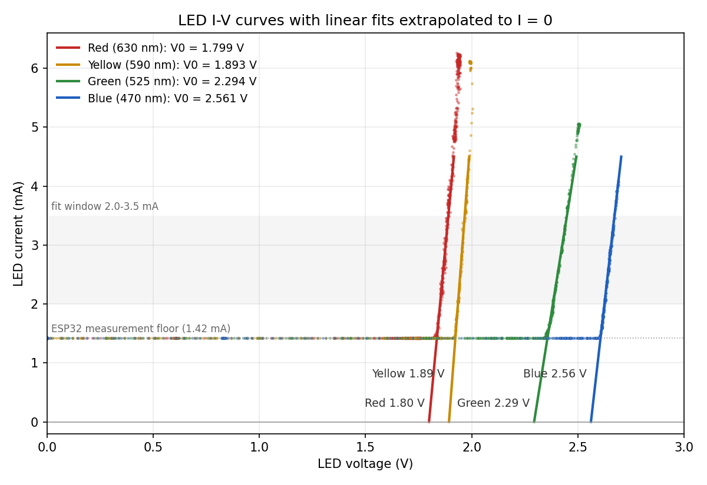
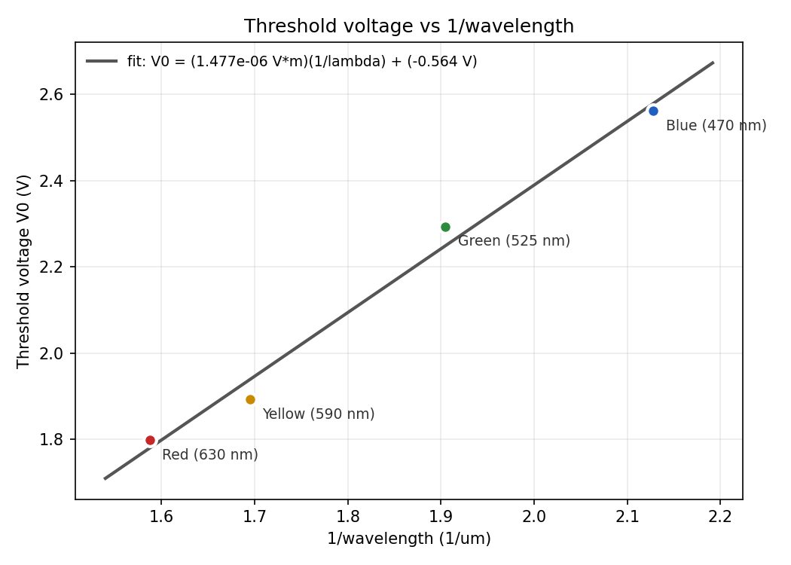

Measuring Planck's Constant with LEDs
Four LEDs, an ESP32, and a potentiometer. Each LED's turn-on voltage tracks the energy of the photons it emits, so a plot of turn-on voltage against 1/wavelength has a slope of hc/e.
Theory
An electron crossing the LED's junction gains energy eV. Light comes out once that energy is enough to make a photon of energy hc/λ, so at the threshold voltage V0:
Plotting V0 against 1/λ for several colours gives a straight line with slope hc/e. Using the slope instead of any single LED cancels voltage offsets that are the same for every LED.
Setup
A potentiometer across the ESP32's 5 V supply feeds the LED through a 470 Ω resistor. A 100 Ω sense resistor below the LED gives the current. The ESP32 reads both sides of the LED on its ADC, averaging 64 readings per point, and streams CSV over USB at about 18 points per second.
5 V ─ pot ─ wiper ─ 470 Ω ─┬─ LED ─┬─ 100 Ω ─ GND
│ │
10 kΩ ─ GPIO34 GPIO35
(anode) (cathode / sense)
V_LED = V(anode) − V(cathode) I = V(cathode) / 100 ΩA Python script reads the serial stream, plots the I-V curve live, and saves one CSV per LED while the knob is turned slowly from zero to full.
Finding each threshold voltage
For each LED, the data were cleaned, a straight line was fitted to the steep part of the I-V curve between 2.0 and 3.5 mA, and the line was extended to I = 0.

| LED | λ (nm) | 1/λ (µm⁻¹) | V0 (V) | Points in fit |
|---|---|---|---|---|
| Red | 630 | 1.587 | 1.799 | 111 |
| Yellow | 590 | 1.695 | 1.893 | 65 |
| Green | 525 | 1.905 | 2.294 | 111 |
| Blue | 470 | 2.128 | 2.561 | 156 |
Changing the fit window to 2.0 to 3.0, 2.5 to 3.5 or 2.0 to 4.0 mA moves each V0 by at most 0.02 V (red) and about 0.01 V for the others.
V0 against 1/λ

Converting the slope to Planck's constant:
Sources of error
- Assumed wavelengths. The wavelengths are typical values for each colour, not datasheet or spectrometer measurements. This is the largest uncertainty: green LEDs, for example, can be 525 nm or 565 nm depending on the chip.
- What "threshold" means. LEDs emit over a range of wavelengths and turn on gradually, so extrapolating a straight line is a convention. It also includes the voltage lost in the LED's internal resistance.
- ESP32 measurement floor. The ADC can't read below about 0.14 V, which shows up as a 1.42 mA floor across the 100 Ω sense resistor. Only data well above it was fitted.
- ADC clipping. The ADC tops out near 3.1 V. For the blue LED, 237 points where the anode reading hit that ceiling were removed.
- Few points. With four LEDs, one off point moves the slope noticeably. The ±0.6 × 10−34 uncertainty is from the line fit only.
Data cleaning
- Rows logged before an ESP32 reset (the clock jumping backwards and staying low) are dropped.
- Single garbled serial lines, whose timestamp is out of order with both neighbours, are dropped. One appeared in the red run.
- Points where VLED + 0.1 × ImA (the anode voltage) is at or above 3.1 V are dropped as clipped.
Data and code
- red.csv, yellow.csv, green.csv, blue.csv Raw I-V data: t_ms, V_led_V, I_mA
- led_v0_results.csv Fitted threshold voltages
- planck_led_logger.ino ESP32 firmware
- led_logger.py Live plotter and CSV logger
- led_analysis.py Cleaning, fits and figures
To reproduce the figures, run the analysis from the data folder:
cd data
python ../code/led_analysis.py